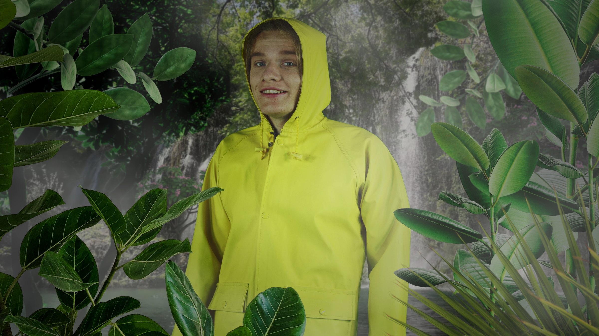
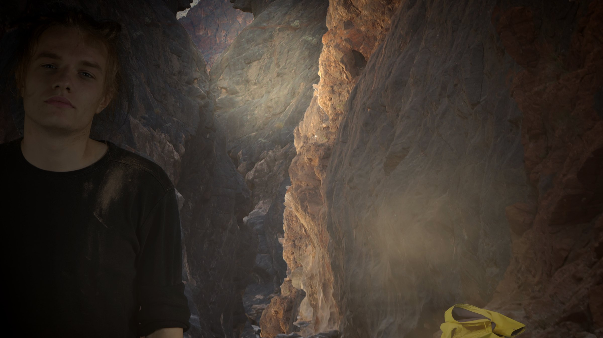

Systemchange
2020 · Single-channel video
Systemchange is a single-channel video by Nickii Schamborski, 2020.


About the work
For more climate justice! This fictional film follows a young white savior during the production of an environmental campaign video, examining both the performance of untainted moral righteousness and the reductive nature of campaign messaging itself. As the shoot progresses, the campaign's simplistic narrative transforms into an absurd prophecy. The project ultimately collapses when the protagonist confronts the racist and hypocritical structures they're participating in, rejecting not only their assigned role as a 'savior' but also the medium's tendency to reduce complex issues into digestible marketing narratives.
Zur Arbeit
Dieser fiktive Film begleitet einen jungen weißen Retter bei der Produktion eines Videos für eine Umweltkampagne und untersucht dabei sowohl die Darbietung unbefleckter moralischer Rechtschaffenheit als auch die reduktive Natur der Kampagnenbotschaften selbst. Im Laufe der Dreharbeiten verwandelt sich die vereinfachte Erzählung der Kampagne in eine absurde Prophezeiung. Das Projekt bricht schließlich zusammen, als der Protagonist die rassistischen und heuchlerischen Strukturen um ihn herum konfrontiert und nicht nur die ihm zugewiesene Rolle als Retter ablehnt, sondern auch die Tendenz des Mediums, komplexe Themen auf verdauliche Marketing-Erzählungen zu reduzieren. Durch diese doppelte Kritik an Charakter und Form hinterfragt der Film die weiße Vorherrschaft in der Umweltbewegung.
Details
- Year
- 2020
- Type
- Single-channel video
- Specs
- 4K, stereo sound, 18:04 min, German. Cinematography: hitus Manleitner; Set operators: Delia Samilia Naghavi Alhosini, İlayda Çakır; Script support: Vidhi Todi, Julia Zalewski